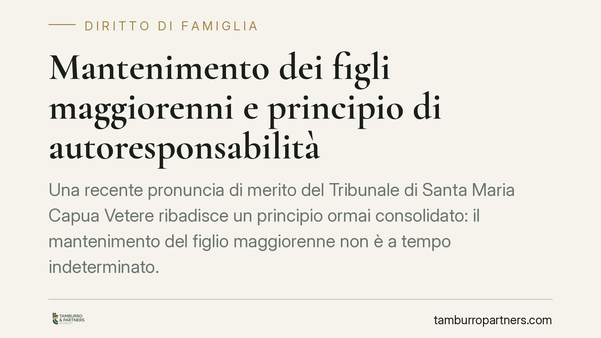

Mantenimento dei figli maggiorenni e principio di autoresponsabilità
Una recente pronuncia di merito del Tribunale di Santa Maria Capua Vetere ribadisce un principio ormai consolidato: il mantenimento del figlio maggiorenne non è a tempo indeterminato. Chi, raggiunta l'età adulta, non prova di essersi attivato nella ricerca di un lavoro perde il diritto al contributo economico, con un rigore che cresce con l'avanzare dell'età.

Il quadro normativo
L'obbligo dei genitori di mantenere i figli trova fondamento nell'articolo 30 della Costituzione e negli articoli 315-bis e 337-septies del Codice civile. Il mantenimento, però, non si estingue automaticamente al compimento della maggiore età.
L'articolo 337-septies c.c. prevede che il giudice possa disporre il versamento di un assegno in favore del figlio maggiorenne non economicamente autosufficiente. La parola chiave è proprio questa: l'autosufficienza. Il contributo è destinato ad accompagnare il figlio fino al momento in cui può ragionevolmente provvedere a sé stesso, non oltre.
Il principio di autoresponsabilità
La giurisprudenza, sulla scia di orientamenti della Cassazione, ha chiarito che l'obbligo di mantenimento è bilanciato dal cosiddetto principio di autoresponsabilità. Il figlio adulto ha il dovere di attivarsi concretamente per raggiungere l'indipendenza economica: completare gli studi in tempi ragionevoli, cercare lavoro, accettare occasioni professionali coerenti con il proprio percorso.
Il rigore di questa valutazione cresce con l'età. A ventidue anni, impegnato in un corso di studi regolare, il figlio gode di una tutela più ampia. Superata una certa soglia anagrafica, l'inerzia protratta diventa sempre meno giustificabile e il diritto al mantenimento si affievolisce fino a venir meno.
L'inversione dell'onere della prova
Il punto decisivo riguarda chi deve dimostrare cosa. Non è il genitore a dover provare che il figlio potrebbe lavorare: è il figlio maggiorenne (o il genitore che agisce per suo conto) a dover dimostrare di essersi attivato seriamente e di non aver ancora raggiunto l'autosufficienza per cause a lui non imputabili.
In mancanza di tale prova, il giudice può ridurre o revocare il contributo. La semplice disoccupazione non basta: occorre documentare un impegno reale e verificabile.
Il bilanciamento con studi e salute
La valutazione resta caso per caso. Il giudice considera la prosecuzione di un percorso di studi coerente e condotto con profitto, eventuali condizioni di salute che limitano la capacità lavorativa, nonché la condizione economica del genitore obbligato. Un genitore con redditi modesti non può essere gravato indefinitamente per sostenere un figlio adulto inattivo.
Implicazioni pratiche
Per il genitore obbligato, la pronuncia conferma la possibilità di chiedere la revisione o la revoca dell'assegno quando il figlio, ormai adulto, non si attiva. Va ricordato che il genitore convivente conserva una legittimazione concorrente a richiedere il contributo per il figlio maggiorenne non autosufficiente, secondo un orientamento consolidato della Cassazione.
Per il figlio maggiorenne, il messaggio è chiaro: il diritto al mantenimento va meritato con comportamenti concreti. Conservare la documentazione della propria attivazione diventa essenziale in caso di contenzioso.
Cosa fare in concreto
- Documentate l'attivazione lavorativa: candidature, iscrizioni ai centri per l'impiego, colloqui e corsi di formazione vanno conservati per iscritto.
- Monitorate il percorso di studi: verificate che sia regolare e condotto nei tempi; ritardi ingiustificati indeboliscono la posizione del figlio.
- Valutate la revisione dell'assegno quando la situazione economica o anagrafica del figlio è mutata: è opportuno affrontare la questione prima che le condizioni si consolidino.
- Raccogliete prova delle rispettive condizioni economiche, sia del figlio sia del genitore obbligato, perché il bilanciamento incide sull'esito.
- Rivolgetevi a un legale prima di sospendere unilateralmente i versamenti: la cessazione dell'obbligo richiede, di regola, un provvedimento del giudice.
---
Contributo informativo a cura di Tamburro & Partners Avvocati — Avv. Giuseppe Tamburro. Non costituisce parere legale.
Ogni famiglia ha il suo equilibrio.
Separazione, divorzio, affidamento, assegno: se vuoi un confronto riservato su una specifica situazione, scrivi allo studio. Ti rispondiamo entro un giorno lavorativo.